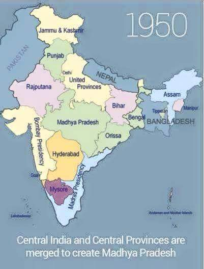
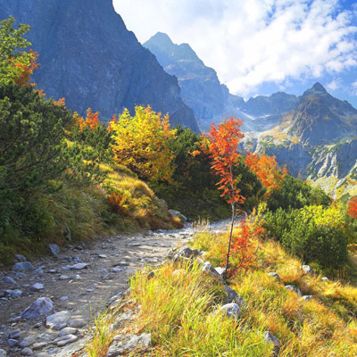
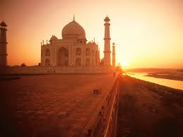
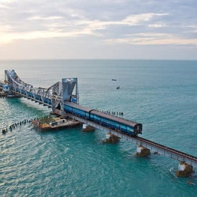
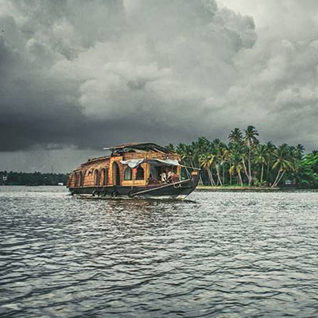

Incredible India ! My India :)
Incredible India ! My India :) India is a “Democratic Parliamentary Republic”.
Now lets understand every word:
Democratic : Democratic implies the government of india is elected by free and fair election with adult suffrage where ther value of each vote is equal irrespective of Race, Religion ,age & habitation.
Parliamentary : India is Governed by A Parliament which has two houses, a council of ministers, a Prime Minister all of whose directly elected by citizens.
Republic : The executive head of india is president who is indirectly elected by the people unlike england which is a democratic monarch (queen is the executive head).
History Of India .
The History of India begins with the birth of the Indus Valley Civilization in such sites as Mohenjo-Daro, Harappa, and Lothal, and the coming of the Aryans. These two phases are usually described as the pre-Vedic and Vedic periods. It is in the Vedic period that Hinduism first arose: this is the time to which the Vedas are dated.
In the fifth century, large parts of India were united under Ashoka. He also converted to Buddhism, and it is in his reign that Buddhism spread to other parts of Asia. It is in the reign of the Mauryas that Hinduism took the shape that fundamentally informs the religion down to the present day. Successor states were more fragmented.
Islam first came to India in the eighth century, and by the 11th century had firmly established itself in India as a political force; the North Indian dynasties of the Lodhis, Tughlaqs, and numerous others, whose remains are visible in Delhi and scattered elsewhere around North India, were finally succeeded by the Mughal empire, under which India once again achieved a large measure of political unity.
The European presence in India dates to the seventeenth century and it is in the latter part of this century that the Mughal Empire began to disintegrate, paving the way for regional states. In the contest for supremacy, the English emerged 'victors', their rule marked by the conquests at the battlefields of Plassey and Buxar.
The Rebellion of 1857-58, which sought to restore Indian supremacy, was crushed; and with the subsequent crowning of Victoria as Empress of India, the incorporation of India into the empire was complete. Successive campaigns had the effect of driving the British out of India in 1947.
Provinces / States of India.

The constitution of 1950 distinguished between three main types of states:
Part A states, which were the former governors' provinces of British India, were ruled by an elected governor and state legislature. The nine Part A states were Assam, Bihar, Bombay, Madhya Pradesh (formerly Central Provinces and Berar), Madras, Orissa, Punjab (formerly East Punjab), Uttar Pradesh (formerly the United Provinces), and West Bengal.
The eight Part B states were former princely states or groups of princely states, governed by a rajpramukh, who was usually the ruler of a constituent state, and an elected legislature. The rajpramukh was appointed by the President of India. The Part B states were Hyderabad, Jammu and Kashmir, Madhya Bharat, Mysore, Patiala and East Punjab States Union (PEPSU), Rajasthan, Saurashtra, and Travancore-Cochin.
The ten Part C states included both the former chief commissioners' provinces and some princely states, and each was governed by a chief commissioner appointed by the President of India. The Part C states were Ajmer, Bhopal, Bilaspur, Coorg, Delhi, Himachal Pradesh, Cutch, Manipur, Tripura, and Vindhya Pradesh.
The only Part D state was the Andaman and Nicobar Islands, which were administered by a lieutenant governor appointed by the central government.
Best Of My Country .

Kashmir
Kashmir was once called Heaven on Earth, and once of the most beautiful places in the world. However, in last couple of decades, terrorism has faded its charm – A place home to Himalayan Ranges.
The State of Jammu & Kashmir has main three geographical regions known as “The Lesser Himalayas” or the “Jhelum Valley” (Kashmir), “The Inner Himalayas” or “The Indus Valley” (Ladakh & Frontier areas) also called “Trans-Himalayas”, and “The Outer-Himalayas” or “The Southern mountain range” (Jammu). The area of Jammu & Kashmir is 2, 22,236 square kilometers.
Leh / Ladakh
The Ladakh capital city of Leh lies near the eastern parts of Jammu and Kashmir, on the crossroads of the historic “Silk Route” from Sinkiang to West Asia and to the plains of India. The humbling monasteries of Shey, Hemis, Alchi, Thikse and Lamayuru will nurture your spiritual needs, and the landscape of Leh provides for a number of adventure activities including mountaineering, white-water rafting and trekking along the Markha Valley.

Agra
Agra’s Taj Mahal is one of the most famous buildings in the world, the mausoleum of Shah Jahan’s favorite wife, Mumtaz Mahal. It is one of the New Seven Wonders of the world, and one of three World Heritage Sites in Agra.
Completed in 1653, the Taj Mahal was built by the Mughal king Shah Jahan as the final resting place for his beloved wife, Mumtaz Mahal. Finished in marble, it is perhaps India’s most fascinating and beautiful monument. This perfectly symmetrical monument took 22 years (1630-1652) of hard labour and 20,000 workers, masons and jewelers to build and is set amidst landscaped gardens.

Kanyakumari
Though there are several places of tourist-interest in the town and district, Kanyakumari is especially popular in India for its spectacular and unique sunrise and sunset. The confluence of three ocean bodies – the Bay of Bengal, the Indian Ocean, and the Arabian Sea – makes the sunrise and sunset even more special. On balmy, full-moon evenings, one can also see the moon-rise and sunset at the same time – on either side of the horizon.

Kerala(Backwaters)
Kerala, situated on the lush and tropical Malabar Coast, is one of the most popular tourist destinations in India. Named as one of the “ten paradises of the world” and “50 places of a lifetime” by the National Geographic Traveler magazine, Kerala is especially known for its ecotourism initiatives, Beautiful Backwaters and Alternative healing massages.
Refrences :-
1) This Link is for the knowing the Goverment System of India.2) This link is for trouist spots.
3) This link is for the history of India.
4) This link will show you States of India.